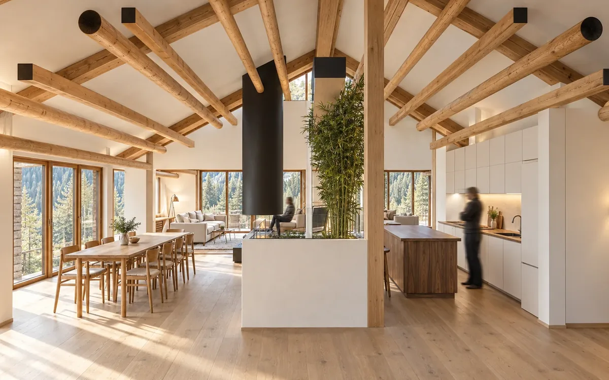
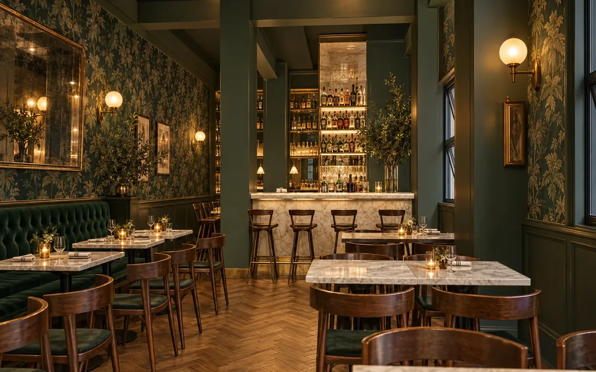
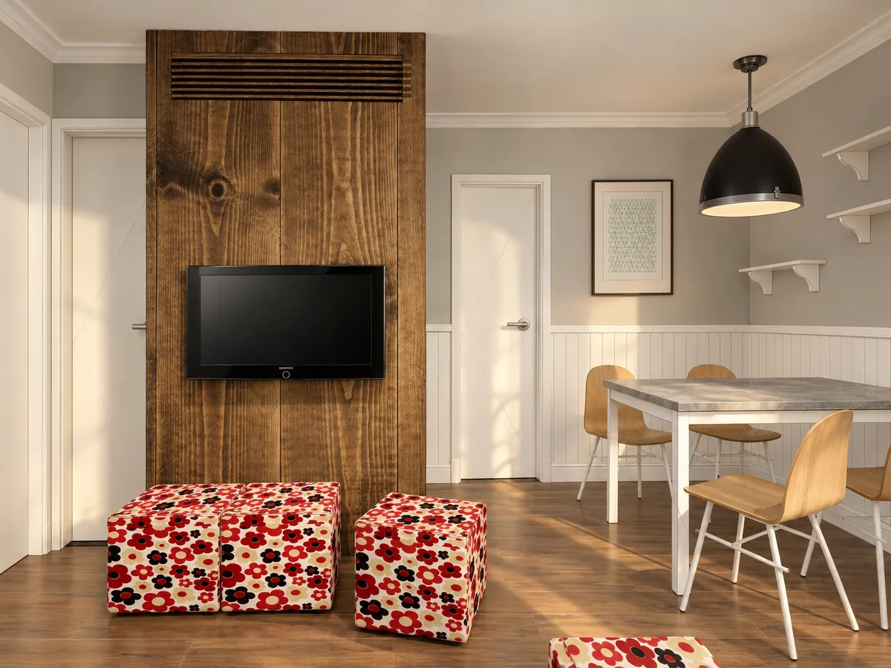
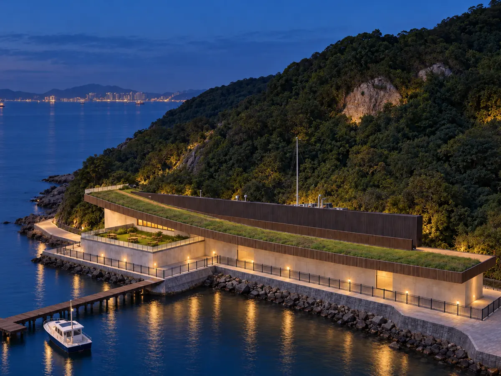
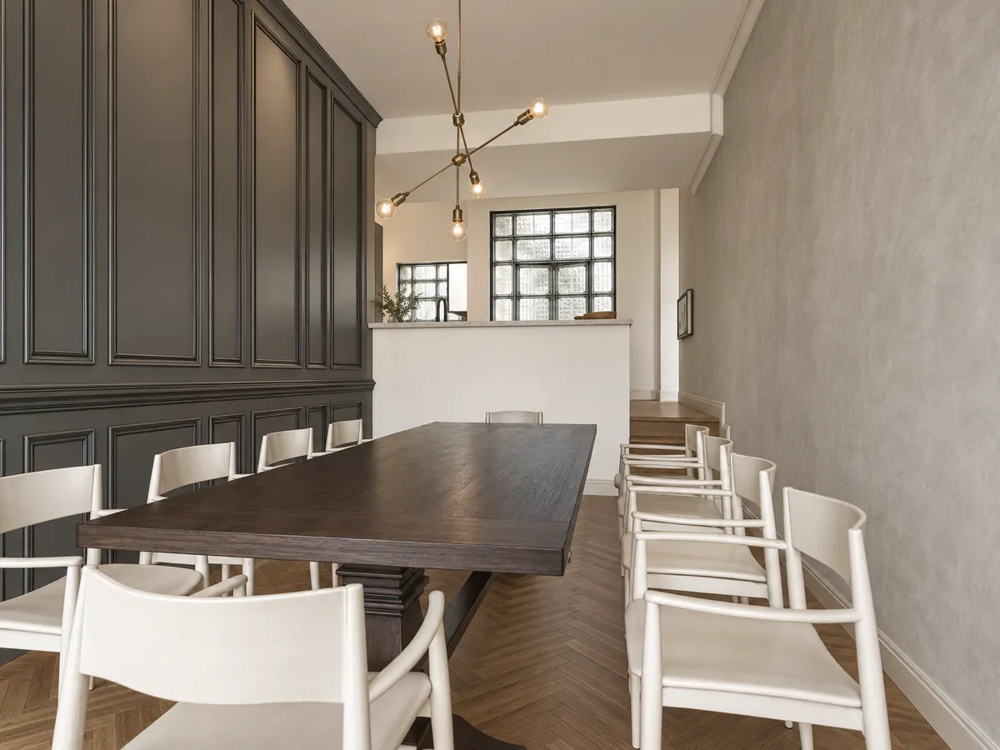
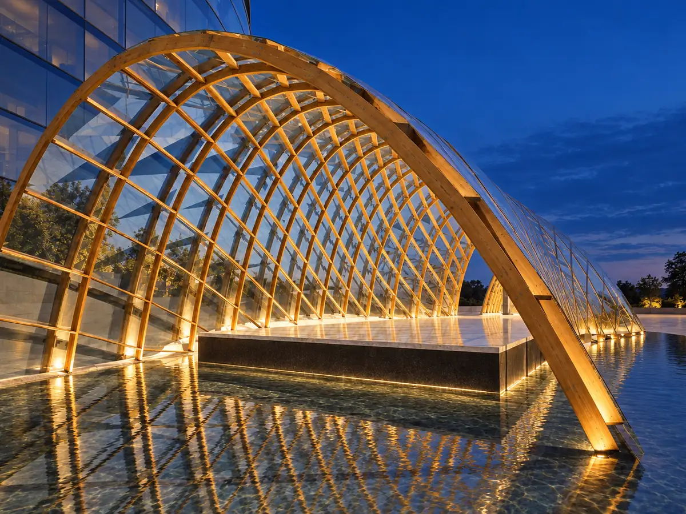

AW Design｜香港建築公司 AI 導入服務· AI services for Hong Kong architecture firms
香港建築公司的 AI 導入服務
AI adoption for Hong Kong architecture firms
由員工培訓開始，到自動化一項工作，再到整套 AI Agent 系統。先從你們最花時間的一件事做起。
From staff training, to one task automated, to a full AI agent system. We start with the job that takes your team the most time.
- 01
員工 AI 工作坊Staff AI workshop
3 小時，最多 12 人，用你們自己的圖則和文件親手做一次。3 hours, up to 12 people, hands-on with your own drawings and documents.
- 02
自動化一項工作One task, automated
例如標書文件包，做成每次都可以重用的流程，並教會同事使用。A tender pack, for example, built into a process you can rerun, with your team trained to use it.
- 03
整套 AI Agent 系統A full AI agent system
接上你們的資料夾和工作流程，每月支援，每季報告節省了多少工時。Connected to your folders and workflows, monthly support, a quarterly report of hours saved.
Scroll to build
你的事務所，是否也這樣？
Does your office work like this too? Tick what applies.
勾選符合你們事務所的項目，這裡會建議由哪一步開始。Tick what applies, and this line suggests where to start.
不必等 AI 成熟，先由一項工作開始。
No need to wait for AI to mature. Start with one task.
初稿，AI 已經做得到
門窗表、規格條款、回標比較，這類文件工作的初稿，AI 現在已經可以做。同事只需要審閱和修改。AI can already draft this kind of document work: schedules, specification clauses, tender comparisons. Your team reviews and corrects.
不會過時的，是你們自己的東西
工具每隔幾個月就換一代，但你們的圖則、文件和做事方法不會過時。現在由小處開始，這些資料就一點一點整理好，下一代工具來了也用得上。Tools change every few months. Your drawings, documents and way of working do not go out of date. Start small now and they get built up, ready for whatever tool comes next.
風險，留在你們手上
拍板和簽名的永遠是建築師；資料留在公司裡；先做一項工作，每一步都可以停下來。The architect always decides and signs. The data stays in the office. Start with one task, and stop after any step.
文件在樓層之間流動，不再在電郵裡迷路。
Documents move between floors, not lost between emails.
每個 AI Agent守住一層：讀圖、填表、對照條款、整理回標。完成的文件交到上一層，每一步都留下紀錄，誰做過甚麼、改過甚麼，一查便知。
Each agent holds one floor: reading drawings, filling schedules, checking clauses, sorting tender returns. Finished work goes up to the next floor, and every step leaves a record of who changed what.
今日五點前交標書
Tender pack due 17:00 today
DUE 17:00今日節省（示範）
SAVED TODAY, DEMO
05 建築師審批 ARCHITECT REVIEW
幾千個碰撞結果，收窄到三十個問題。
一個 BIM 模型跑一次碰撞檢查，動輒幾千個結果，大部分是同一個問題重複出現。AI Agent先歸類、去重、排次序，剩下真正要處理的，才交回給人。
One clash run can return thousands of results, most of them the same problem repeated. The agent groups, de-duplicates and ranks them, then hands back the few that matter.
示範數字，虛構模型 · Illustrative figures, fictional model
最後拍板的，永遠是建築師。
The agent proposes. It does not sign.
每個問題都附上位置、原因和建議，由負責的同事決定接受、修改或否決。試試看：
Every issue arrives with its location, its cause and a suggestion. The architect in charge accepts, revises or rejects it. Try it:
風管穿過轉換梁，淨空差 150 mm。
Duct runs through the transfer beam, 150 mm short of clearance.
Drop the duct 200 mm into the corridor ceiling.
三項服務，由地基開始加建。
Three services. Start at ground level, build higher once it pays its way.
整套 AI Agent 系統A full AI agent system
接上你們的資料夾和工作流程，每月支援，每季報告節省了多少工時。Connected to your folders and workflows, monthly support, a quarterly report of hours saved.
- 幾個 AI Agent 各守一項工作，交接留下紀錄Several agents, each holding one job, every handoff recorded
- 每月支援：調整、修正，加入下一項工作Monthly support: adjust, fix, add the next job
- 每季一份報告，列出節省了多少工時A quarterly report of the hours saved
自動化一項工作One task, automated
例如標書文件包，做成每次都可以重用的流程，並教會同事使用。A tender pack, for example, built into a process you can rerun, with your team trained to use it.
- 一起揀出最花工時的一件事Together, pick the job that takes the most hours
- 拆開步驟，做成每次都可以重用的流程Break it into steps and build a process you can rerun
- 交付流程和說明，教會負責的同事使用Hand over the process and notes, and train the people who run it
員工 AI 工作坊Staff AI workshop
3 小時，最多 12 人，用你們自己的圖則和文件親手做一次。3 hours, up to 12 people, hands-on with your own drawings and documents.
- 事前由你們揀兩三份真實文件Beforehand, you choose two or three real documents
- 每位同事親手用 AI 完成一件真實工作Each person does one real piece of work with AI, by their own hand
- 完成後留下步驟筆記，回到座位也可以照做Step notes to take back to their desks
由下而上閱讀，像一張剖面圖。每一步完成後都可以停下來 · Read from the ground up, like a section. You can stop after any step.
想自己先學，也有課程。
Prefer to learn it yourself first? There are courses.
- C01基礎班Basic course: first steps with AI, for architects課程 Course
- C02進階班（建築行業）Advanced course: build your own agent workflows課程 Course
- T01香港理工大學 DBA（工商管理博士）課程客席講座：AI AgentGuest lecture, AI Agents, Doctor of Business Administration programme, The Hong Kong Polytechnic University2026 年 5 月 · Zoom
- T02更多講座，陸續加入More talks to be added
做出來的，比說出來的多。
Built, then written about. In that order.
- D01AI Agent準備標書文件包Agents drafting a tender pack虛構示範 Demo
- D02BIM 碰撞分流：幾千個減至約三十個Clash triage: thousands down to about thirty虛構示範 Demo
- D03由模型出入則圖則（香港）Submission drawings from the model (HK)虛構示範 Demo
- D04由 SketchUp 模型出 AI 效果圖AI renders from SketchUp models虛構示範 Demo
- L01香港地盤分析HK Site Analysis, a web toolLab →
- L02香港地盤模型HK Site Model, a web toolLab →
- J札記：AI 與建築，每週更新Journal: notes on AI and architecture, weeklyJournal →
我是建築師：過去的作品。
An architect first: past work.
先做建築，後做 AI。以下六個項目來自作品頁，其中四個的封面是由原設計模型製作的 AI 效果圖。
Architecture came first, AI second. Six projects from the work pages; four of the cover images are AI renders made from the original design models.

W01倒置木屋The Upside-Down Chalet住宅 · 室內 · Residential · interior
W02Cocotte 法式小館Cocotte餐飲 · 室內 · 個人設計 · Hospitality · interior · own design
AI 效果圖 · AI renderW03香港家庭住宅Family flat, Hong Kong住宅 · 室內 · 個人設計 · Residential · interior · own design
AI 效果圖 · AI renderW04離島污水處理廠外觀及園景Island sewage treatment works, exterior and landscape基建 · 外觀及園景 · Infrastructure · exterior and landscape
AI 效果圖 · AI renderW05香港錯層獨立屋Split-level house, Hong Kong住宅 · 室內 · 合作項目 · Residential · interior · collaboration
AI 效果圖 · AI renderW06木網殼展亭概念設計Timber gridshell pavilion concept展亭 · 概念設計 · Pavilion · concept- anzonwong.com/work全部作品 →All work
真實項目 · Real projects, shown on anzonwong.com/work
Anzon Wong
建築師，在英國工作，來自香港。為建築事務所設計 AI Agent工作流程。
AW Design 是一個實驗：2026 年 3 月開始，看看 AI Agent能把一間建築事務所帶到多遠。
Architect, working in the UK, from Hong Kong. Designs AI agent workflows for architecture offices. AW Design is an experiment started in March 2026: how far can AI agents take an architecture office?
由一件事開始。
告訴我，你們最花時間的一件事。
Tell me the one job that eats your team's time.
- 1回覆約時間I reply to arrange a time
- 230 分鐘初步會談（網上）A 30-minute intro call, online
- 3一份建議：由哪一步開始A written suggestion: which step to start with